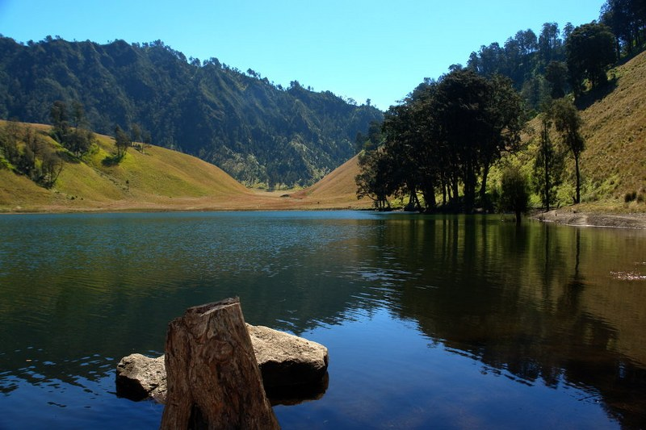

Selamat Datang di Malang Kota Pariwisata
Selain terletak di tempat yang strategis, Kota Malang juga berada di dataran tinggi, sehingga memiliki hawa sejuk yang membuat orang betah di sana. Tak heran jika para warga dan juga wisatawan tak bosan-bosannya memilih Kota Malang sebagai destinasi liburan mereka. Kota Malang punya banyak menawarkan berbagai macam destinasi wisata.
Bahkan sebagian masih belum terjamah manusia, yang membuat para penjelajah suka berdatangan untuk explore daerah-daerah tersebut. Namun, untuk Anda sebagai wisatawan tak perlu bersusah-susah untuk mengexplore seperti itu. Karena banyak sekali tempat-tempat wisata terindah yang sudah tertata cantik untuk Anda kunjungi saat Anda berada di Kota Malang. Buat traveler yang masih bingung mengenai tempat destinasi wisata di Malang yang recommended, berikut lima di antaranya yang tak boleh dilewatkan.
Kebun Teh Wonosari
Jika Anda bosan berwisata ke pantai dan ingin mencari suasana yang sejuk, santai dan membuat relax,maka berkunjunglah ke kota Malang. Kota Malang berada di wilayah dataran tinggi sehingga memiliki iklim yang dingin dan sejuk. Selain terkenal dengan agrowisata apelnya, wisata perkebunan teh di kota Malang juga tidak kalah menarik. Salah satunya objek wisata agro Kebun Teh Wonosari Lawang Malang

Kebun Teh Wonosari bisa diibaratkan sebagai pengganti wisata puncak bagi masyarakat Jawa Timur, terutama yang bertempat tinggal di Kota Malang. Keindahan panorama Kebun Teh tidak kalah menakjubkan dibandingkan wisata Puncak di Bogor. Lokasi agrowisata Kebun Teh Wonosari terletak di kaki gunung Arjuno, alamat perkebunan ini tepatnya berada di Desa Toyomarto, Kecamatan Singosari, Kabupaten Malang, Provinsi Jawa Timur dengan ketinggian 950-1.250 meter dari permukaan laut.
Sejarah Berdirinya
Kebun Teh Wonosari memiliki sejarah panjang sejak zaman kolonial Belanda, tepatnya berdiri pada tahun 1910. Kebun Teh Wonosari merupakan kebun teh pertama di Jawa Timur yang bernaung di perusahaan Belanda bernama NV.Cultur Maathappy pada saat itu kebun teh ini ditanami teh dan kina. Namun pada masa penjajahan Jepang, dengan misi swasembada pangan untuk jajahanya sebagian tanaman teh diganti dengan tanaman bahan makanan pokok seperti singkong, ubi, kentang dan sejenisnya.
Setelah terbebas dari penjajahan Belanda dan Jepang, perkebunan teh diambil alih oleh PT.Perkebunan Nusantara XII (PTPN XII) sampai saat ini.
Fasilitas dan Aktivitas
Bila Anda berkunjung ke Kebun Teh Wonosari, tak perlu khawatir karena tempat ini disediakan berbagai fasilitas yang sangat memadai. Mulai dari fasilitas penginapan (wisma, hotel, villa, cottage), masjid, tempat olahraga, rekreasi dan restoran.
Fasilitas kegiatan di tempat wisata ini pun sangat beragam sehingga Anda tidak hanya bisa menikmati panorama hamparan kebun teh yang indah. Anda bisa melihat proses pengolahan daun teh dari proses pemetikan daun teh hingga menjadi teh yang siap diseduh.
Mulai dari proses penerimaan daun teh, proses pelayuan, proses penggilingan, fermentasi, pengeringan, proses pengepakan sampai teh siap untuk dipasarkan. Namun kegiatan ini hanya bisa dinikmati pada hari kerja sedangkan pada hari libur atau weekend, pengunjung tidak bisa melihat proses pembuatan teh disini.
Sumber: https://jejakpiknik.com/kebun-teh-wonosari/Ranu Kumbolo
Ranu Kumbolo adalah sebuah danau air tawar yang sering menjadi tempat transit bagi para pendaki Gunung Semeru. Danau ini terletak di ketinggian 2.400 meter di atas permukaan laut. Danau Ranu Kumbolo juga merupakan sumber air bersih bagi para pendaki gunung semeru. Dengan debit air yang berlimpah, danau ini juga menjadi tempat berkumpulnya para pendaki untuk berkemah. Ranu Kumbolo berlokasi di kawasan Taman Nasional Bromo Tengger Semeru, tepatnya di antara kabupaten Malang dan Kabupaten Lumajang, Jawa Timur.

Bagi Anda yang berada di luar Jawa Timur, Anda dapat menggunakan jalur udara menuju Malang melalui bandar udara Abdurrahman Saleh. Namun jika Anda lebih menyukai perjalanan yang santai, Anda juga dapat menggunakan kereta api menuju stasiun kota baru. Setelah tiba di kota Malang, Anda bisa mencari angkutan umum dengan jurusan desa Tumpang kemudian Anda berhenti di Terminal Tumpang. Perjalanan selanjutnya dapat Anda tempuh menggunakan mobil jeep (SUV) yang disewakan oleh penduduk sekitar menuju Ranu Pani.
Perjalanan wisata menuju Ranu Kumbolo bukanlah perjalanan yang mudah untuk ditempuh, bahkan dapat dikatakan perjalanan yang berat karena membutuhkan kekuatan fisik yang prima dan perbekalan yang cukup. Disarankan bagi Anda yang ingin berwisata ke danau ini, paling tidak selama satu minggu sebelum keberangkatan alangkah baiknya jika latihan fisik terlebih dahulu. Latihan fisik ini bisa berupa jogging, gym, lari, dan olahraga lain yang dapat meningkatkan daya tahan dan kekuatan tubuh Anda untuk melakukan pendakian.
Selain fisik, siapkan foto kopi KTP sebanyak tiga lembar, surat keterangan sehat dari dokter, dan materai. Di Ranu Pani nanti sebelum mendaki, Anda akan diminta melakukan registrasi dengan menunjukkan dua surat ini. Hal ini bertujuan untuk menjaga keamanan dan sebagai tindakan penyelamatan bisa terjadi sesuatu yang buruk pada Anda saat dalam perjalanan.
Hal terakhir yang harus Anda siapkan sebelum melakukan perjalanan adalah peralatan mendaki seperti jaket (usahakan jaket tebal yang tahan air), kaos kaki, sarung tangan, penutup kepala, penutup telinga, masker, sleeping bag, tenda, makanan, dan air minum. Hal yang paling penting adalah membawa persediaan air yang cukup. Anda juga bisa membawa coklat atau madu untuk membantu menambah stamina tubuh pada saat perjalanan mendaki Gunung Semeru.
Tiket masuk ke Danau Ranu Kumbolo kurang lebih sekitar Rp 10.000 per orang dan Rp 20.000 per tenda. Untuk mencapai Danau Ranu Kumbolo, ada dua alternatif jalur pendakian menuju Danau Ranu Kumbolo yang dapat Anda tempuh yaitu melalui Watu Rejeng dan Bukit Ayek – ayek. Jalur Watu Rejeng jauh lebih mudah ditempuh dibandingkan dengan jalur Ayek – ayek, namun membutuhkan waktu yang lebih lama. Sedangkan melalui jalur Bukit Ayek-ayek, perjalanan jauh lebih cepat tetapi jalan yang harus Anda tempuh sangat curam dan cukup berbahaya bagi seorang pendaki yang belum berpengalaman.
Dari pos pendaftaran di Ranu Pani, Anda akan melakukan perjalanan dengan berjalan kaki sejauh lima sampai tujuh kilometer menyusuri lereng bukit yang ditumbuhi bunga edelweiss. Meskipun bunga edelweiss ini tumbuh liar tetapi sebaiknya Anda jangan memetik sembarangan, karena bunga ini termasuk bunga langka yang harus kita lestarikan.
Kemudian Anda akan tiba di Watu Rejeng, sebuah spot yang memiliki batuan terjal yang indah. Perjalanan Anda selanjutnya akan ditemani oleh pemandangan lembah dan bukit yang ditumbuhi pohon cemara dan pinus. Jika beruntung, Anda dapat melihat kepulan asap dari puncak Semeru. Perjalanan ini akan memakan waktu lima sampai tujuh jam, tergantung kekuatan fisik Anda. Sepanjang perjalanan terdapat 4 pos peristirahatan yang dapat Anda gunakan untuk beristirahat ketika Anda mengalami kelelahan.
Sesampainya di Danau Ranu Kumbolo, Anda dapat mendirikan tenda dan berkumpul bersama pendaki – pendaki lainnya. Jika cuaca cerah saat malam hari, Anda bisa melihat gugusan bintang dalam galaksi bima sakti yang indah. Dan saat matahari mulai terbit keesokan harinya, Anda bisa melihat keindahan matahari terbit di balik dua bukit hijau yang dipadukan dengan beningnya air danau. Terdapat beberapa hal yang perlu wisatawan perhatikan jika berkunjung ke danau ini, yaitu:
- Air di danau Ranu Kumbolo sangat bersih dan jernih, sehingga bisa langsung diminum. Di danau ini dilarang mandi, buang air, dan berenang.
- Saat malam hari udara di Danau Ranu Kumbolo bisa mencapai minus 5 derajat Celcius, oleh karena itu penting bagi Anda untuk membawa jaket khusus mendaki dan perlengkapan penghangat tubuh lainnya.
- Membawa kantong plastik sendiri khusus untuk tempat sampah, lalu tidak meninggalkan sampah di lingkungan ini meskipun hanya sebungkus permen.
Pantai Banyu Anjlok

Pantai Banyu Anjlok yang memiliki panorama mempesona ini terletak di Tirtoyudo, Kab. Malang, Malang Selatan. Asal nama Banyu Anjlok sendiri adalah bahasa Jawa dengan arti air jatuh, adanya air terjun serta aliran air yang begitu jernih ini memang banyak menggoda traveller untuk mengunjungi Pantai Banyu Anjlok dan menikmati sensasi berbasah-basahan dari air yang jatuh di pinggiran batu besar.Aliran air di Pantai Banyu Anjlok berasal dari atas bukit, apabila Anda naik ke atas, disana ada cekungan yang cukup lebar dan dapat digunakan sebagai tempat berenang dan berendam.

Rute Menuju Lokasi
Jarak dari pusat kota Malang menuju ke Pantai Banyu Anjlok memerlukan waktu 4 jam perjalanan. Alamat objek wisata ini letaknya tepat di Desa Purwodadi, Tirtoyudo, Kabupaten Malang 65182. Untuk menuju ke Pantai Banyu Anjlok, Anda dapat mengarah ke selatan Malang, di Kecamatan Dampit. Setelah sampai di Kecamatan Dampit, Anda bisa meneruskan perjalanan menuju ke Kabupaten Lumajang dan bertemu dengan pertigaan Tirtoyudo. Ambil arah ke Pujiharjo dan Pantai Sipelot. Dari pertigaan Tirtoyudo, menuju ke Pantai Banyu Anjlok memakan jarak 30 km.
Ikuti jalan utama sehingga bertemu dengan pertigaan dan terdapat papan penunjuk Pantai Lenggoksono serta Wediawu. Nanti Anda akan bertemu dengan pos tiket masuk Desa Purwodadi, setelah sampai di pos tiket, anda bisa bertanya kepada penduduk setempat bagaimana cara menuju ke Pantai Banyu Anjlok.
Fasilitas Yang Ada
Pantai Banyu Anjlok merupakan pantai yang cukup terkenal, sehingga berbagai fasilitas disini pun sudah cukup lengkap. Di Pantai Banyu Anjlok terdapat kamar mandi, WC umum. Anda juga tidak perlu takut kelaparan karena ada beberapa warung yang menyajikan makanan di sekitar kawasan objek wisata ini. Perlu diketahui, disekitar Pantai Banyu Anjlok tidak terdapat hotel atau tempat menginap, sehingga jika ingin menginap lebih baik Anda menyiapkan tenda.
Sumber: https://jejakpiknik.com/pantai-banyu-anjlok/Pantai Balekambang
Pantai Balekambang merupakan salah satu kawasan wisata pantai yang berada di Malang dengan pemandangan dan panorama luar biasa. Keindahan pantai ini memang sedang naik daun. Hal ini dibuktikan dengan banyaknya para wisatawan yang mengunjuni salah satu destinasi wisata di Malang tersebut ketika menjelang libur panjang. Keindahan dan eksotisme dari Pantai Balekambang memang sangat berbeda dengan pantai-pantai di pesisir Jawa Timur khususnya daerah Selatan. Apalagi pantai ini memiliki Tanah Lotnya Jawa Timur. Topografi dan juga landscape pantai ini memang sangat mirip dan senada dengan keindahan Pantai Tanah Lot yang sudah sangat terkenal di pulau Dewata.

Rute Menuju Lokasi
Pantai Balekambang sendiri berada di daerah Dusun Sumber Jambe, Desa Srigonco, Kecamatan Bantur, Malang 65148. Jaraknya ke Kota Malang hanya sekitar 67 km menuju ke arah selatan. Akses menuju kawasan wisata pantai ini memang sudah sangat memadai. Akses jalan utama sudah diaspal mulus dan juga bisa dilalui dengan mudah. Akan tetapi para wisatawan dan juga hati-hati. Para wisatawan bisa memilih untuk menggunakan kendaraan pribadi, angkutan umum hingga bus yang siap mengantar menuju ke pantai yang indah ini. Disepanjang perjalanan para wisatawan bisa melihat suasana hijau hutan tropis dan hutan jati yang sangat indah.
Fasilitas Yang Ada
Di kawasan wisata pantai ini sudah banyak penginapan dan villa yang bisa dipilih sesuai dana atau badget. Balekambang beach ini sudah memberikan service yang memuaskan. Untuk fasilitas lainnya seperti toilet umum juga sudah tersedia. Di kawasan wisata pantai ini sudah terdapat toilet umum yang sangat bersih dan juga bisa digunakan membilas serta membersihkan diri usai bermain di sekitar pantai dengan puas.
Untuk fasilitas rumah makan juga cukup banyak ditemukan di sepanjang pantai ini dan warung tersebut siap menjajakan aneka menu makanan laut yang menggoda. Sementara untuk toko cenderamata, di Pantai Balekambang ini sudah sangat lengkap. Para wisatawan bisa membeli souvenir untuk teman atau saudara
Sumber: https://jejakpiknik.com/pantai-balekambang/Pantai Tiga Warna
Salah satu pantai di Malang yang menunggu Anda kunjungi adalah Pantai 3 Warna. Jika menengok di peta, Pantai 3 Warna bersebelahan dengan Sendang Biru, dekat dengan Air Terjun Telaga Warni, hingga dekat dengan Laut Dampit. Pantai 3 Warna berada dibawah pengelolaan Bhakti Alam. Pihak manajemen ini memperkenalkan seperti apa keindahan alam yang berada di Indonesia dan mengedukasi para wisatawan jika menjaga kelestarian alam merupakan hal yang wajib untuk dilakukan, seperti adanya beberapa peraturan saat Anda berkunjung di salah satu pantai Jawa Timur ini.

Bersih dan Asri
Pantai 3 Warna merupakan salah satu pantai yang terjaga kebersihannya. Saat tiba di Pantai 3 Warna, Anda akan di data oleh petugas yang menjaga pantai, mulai dari barang apa yang Anda bawa, berapa jumlah barang yang Anda bawa. Terlebih barang-barang yang berbau sampah. Setiap barang yang Anda bawa masuk dalam pantai wajib Anda bawa kembali di tempat pendataan barang tadi. Bila ada barang yang hilang, Anda harus membayar Rp.100.000 untuk per barangnya.
Pengelola Pantai 3 Warna juga membatasi jumlah pengunjung per hari, 100 pengunjung. Pantai 3 Warna termasuk area Rehabilitasi serta Konservasi Mangrove, Hutan Lindung Desa Sitiarjo, Terumbu Karang, Kecamatan Sumber Manjing Wetan, Kab. Malang. Alamat Pantai 3 Warna berada di Tambakrejo, Sumbermanjing Wetan, Kabupaten Malang, Jatim. Alamat Pantai 3 Warna berada di Tambakrejo Sumbermanjing Wetan, Kab. Malang, Jawa Timur.
Penyebab Perbedaan Warna
Mungkin Asnda bertanya-tanya, apa yang bisa menyebabkan Pantai 3 Warna ini memiliki perbedaan warna. Untuk warna merah yang berada di Pantai 3 Warna, hal ini dikarenakan oleh pembiasan cahaya matahari. Seperti yang kita ketahui, cahaya matahari terdiri 7 warna berbeda. Masing-masing warna mempunyai panjang gelombang yang berbeda pula. Semakin panjang gelombangnya, maka semakin kecil pula kekuatan warna untuk menembus air, begitu juga sebaliknya. Oleh sebab itu, warna merah di Pantai 3 Warna hanya berada di kedalaman yang tidak lebih dari 20 meter.

Selain warna merah, Pantai 3 Warna juga terdapat warna hijau. Warna hijau yang berada di Pantai 3 Warna disebabkan oleh beberapa hal seperti pengendapan lumpur dari dasar laut hingga plankton-plankton dalam jumlah yang besar. Warna terakhir, adalah warna biru. Warna biru, seperti yang kita ketahui adalah warna yang menjadi warna laut biasanya
Sumber: https://jejakpiknik.com/pantai-3-warna/